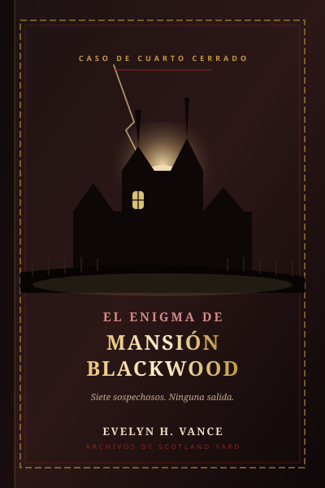

Caso del Mes
Misterio
El enigma de Mansión Blackwood
Siete invitados cenan bajo el fulgor de los candelabros mientras una tormenta aísla la colina de Devonshire. A medianoche, Lord Blackwood yace sin vida en una biblioteca cerrada con doble cerrojo interior.